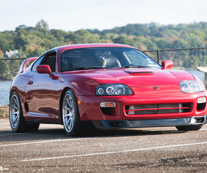
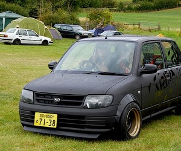
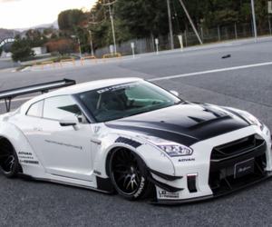
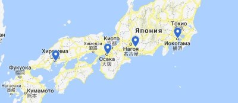

|  |  |
|  |
Japanese Domestic Market (JDM) (з англ. - «Японський внутрішній ринок» або Японський вітчизняний ринок) - термін, поширений відносно автомобілів (як і запчастин), що продаються на ринку Японії. Зазвичай моделі автомобілів, призначених для Японії, відрізняються від тих же моделей, призначених для інших ринків, або ж зовсім не мають зарубіжних аналогів.
Основними виробниками моделей автомобілів для JDM є японські ж компанії:
- Toyota
- Nissan
- Honda
- Mitsubishi
- Mazda
- Suzuki
- Subaru
- Isuzu
- Daihatsu
- Mitsuoka

Імпорт в JDM представлений незначно, в основному моделями сегмента преміум і люкс, а також моделями японських фірм, що випускаються за кордоном.
JDM є другим за обсягом, поступаючись тільки ринку США.